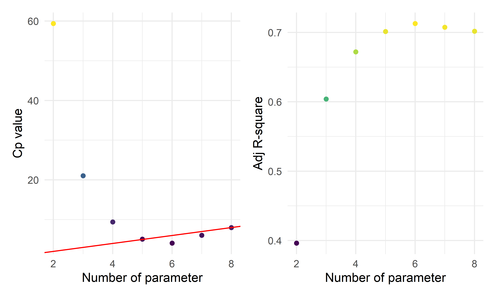
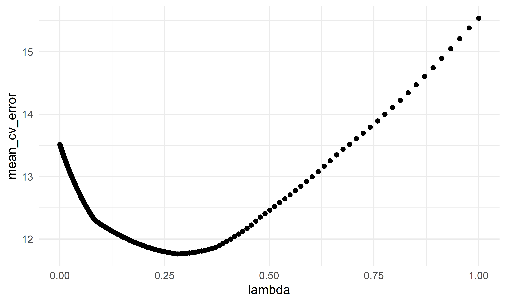

MLR prevalence
Data Importing
source("data_preprocessing_backbone.R")
labor_data = read_csv("./data/CA_Labor.csv") %>%
janitor::clean_names() %>%
dplyr::select(-employment,-unemployment,-rank) %>%
rename(unemployment=unemployment_rate_per_cent)
population_data = read_csv("./data/CA_Land_Area.csv") %>%
janitor::clean_names() %>%
dplyr::select(-rank, -state) %>%
mutate(
location = ifelse(county %in% c("Los Angeles", "Orange", "San Diego", "Monterey", "San Benito", "San Luis Obispo", "Santa Barbara", "Santa Cruz", "Ventura", "Alameda", "Contra Costa", "Marin", "Napa", "San Francisco", "San Mateo", "Santa Clara", "Solano", "Sonoma", "Del Norte", "Humboldt", "Mendocino"), "costal", "inland"))
geo_data = read_csv("./data/ca_boundaries.csv") %>%
janitor::clean_names() %>%
dplyr::select(name, intptlat, intptlon) %>%
rename(county=name)
ca_joining_data = left_join(population_data, labor_data, by = c("county"))
ca_nonmedical_data = left_join(ca_joining_data, geo_data, by = c("county"))
ca_nonmedical_data = ca_nonmedical_data %>%
mutate(labor_rate = labor_force/population*100) %>%
dplyr::select(-labor_force)
demo_covid = demo %>%
mutate(cumulative_deaths= as.numeric(population),
cumulative_cases = as.numeric(cumulative_cases),
prevalence=cumulative_cases/population*100,
test = cumulative_total_tests/population*100,
) %>%
dplyr::select(county_name, prevalence, test, population) %>%
rename(county=county_name) %>%
group_by(county) %>%
summarize(prevalence=max(prevalence),
test = max(test)) %>%
filter(!county %in% c("Out of state","Unknown"))
vaccine = read_csv("./data/CA_covid19vaccines.csv") %>%
janitor::clean_names() %>%
group_by(county) %>%
summarise(
fully_vaccinated = sum(fully_vaccinated)
# total number of fully vaccinated people
) %>%
arrange(county) %>%
drop_na() %>%
filter(!county %in% c("Unknown", "All CA Counties", "All CA and Non-CA Counties"))
ca_medical_data = left_join(demo_covid, vaccine, by =c("county"))
ca_premodel_data = left_join(ca_medical_data, ca_nonmedical_data, by = c("county")) %>%
mutate(
vaccination=fully_vaccinated/population*100) %>%
dplyr::select(-fully_vaccinated)
skimr::skim(ca_premodel_data)| Name | ca_premodel_data |
| Number of rows | 58 |
| Number of columns | 11 |
| _______________________ | |
| Column type frequency: | |
| character | 2 |
| numeric | 9 |
| ________________________ | |
| Group variables | None |
Variable type: character
| skim_variable | n_missing | complete_rate | min | max | empty | n_unique | whitespace |
|---|---|---|---|---|---|---|---|
| county | 0 | 1 | 4 | 15 | 0 | 58 | 0 |
| location | 0 | 1 | 6 | 6 | 0 | 2 | 0 |
Variable type: numeric
| skim_variable | n_missing | complete_rate | mean | sd | p0 | p25 | p50 | p75 | p100 | hist |
|---|---|---|---|---|---|---|---|---|---|---|
| prevalence | 0 | 1 | 22.53 | 5.77 | 9.45 | 19.54 | 22.51 | 25.47 | 38.64 | ▂▆▇▂▁ |
| test | 0 | 1 | 367.42 | 171.84 | 104.51 | 277.33 | 312.06 | 402.06 | 983.95 | ▅▇▂▁▁ |
| land_area_sq_mi | 0 | 1 | 2685.85 | 3102.32 | 46.87 | 959.49 | 1535.34 | 3454.40 | 20056.92 | ▇▂▁▁▁ |
| population | 0 | 1 | 656326.21 | 1443528.73 | 1202.00 | 47277.50 | 179992.50 | 656486.00 | 9974203.00 | ▇▁▁▁▁ |
| unemployment | 0 | 1 | 7.33 | 2.12 | 4.42 | 5.97 | 6.96 | 8.22 | 17.37 | ▇▆▁▁▁ |
| intptlat | 0 | 1 | 37.84 | 2.16 | 33.02 | 36.65 | 38.04 | 39.25 | 41.76 | ▃▂▇▇▃ |
| intptlon | 0 | 1 | -120.75 | 1.94 | -124.00 | -122.03 | -120.91 | -119.84 | -115.36 | ▃▇▃▂▁ |
| labor_rate | 0 | 1 | 45.90 | 6.86 | 27.46 | 41.68 | 47.42 | 50.03 | 65.86 | ▁▃▇▂▁ |
| vaccination | 0 | 1 | 65.81 | 15.11 | 26.84 | 54.55 | 64.62 | 76.02 | 101.87 | ▁▆▇▆▃ |
- The data includes 58 observations and 11 variables. Now we are
interested on whether the death cases are associated with
area,populationandtesting_cases.
Data Description
point <- format_format(big.mark = " ", decimal.mark = ",", scientific = FALSE)
rawplot_prevalence = ca_premodel_data %>%
ggplot(aes(x = prevalence)) +
geom_density(fill = "#69b3a2", color = "#e9ecef", alpha = .8) +
scale_y_continuous(labels = point)
rawplot_unemployment = ca_premodel_data %>%
ggplot(aes(x = unemployment)) +
geom_density(fill = "#69b3a2", color = "#e9ecef", alpha = .8) +
scale_y_continuous(labels = point) +
scale_x_continuous(labels = point)
rawplot_labor = ca_premodel_data %>%
ggplot(aes(x = labor_rate)) +
geom_density(fill = "#69b3a2", color = "#e9ecef", alpha = .8) +
scale_y_continuous(labels = point) +
scale_x_continuous(labels = point)
rawplot_population = ca_premodel_data %>%
ggplot(aes(x = population)) +
geom_density(fill = "#69b3a2", color = "#e9ecef", alpha = .8) +
scale_y_continuous(labels = point) +
scale_x_continuous(labels = point)
plot_area = ca_premodel_data %>%
ggplot(aes(x = land_area_sq_mi)) +
geom_density(fill = "#69b3a2", color = "#e9ecef", alpha = .8)
plot_test = ca_premodel_data %>%
ggplot(aes(x = test)) +
geom_density(fill = "#69b3a2", color = "#e9ecef", alpha = .8)
ca_model_data = ca_premodel_data %>%
mutate(ln_unemployment = log(unemployment),
ln_area = log(land_area_sq_mi),
ln_population = log(population),
ln_test = log(test)) %>%
dplyr::select(-unemployment,-land_area_sq_mi,-population,-test,-intptlat,-intptlon,-county)
plot_ln_test = ca_model_data %>%
ggplot(aes(x = ln_test)) +
geom_density(fill = "#69b3a2", color = "#e9ecef", alpha = .8)
plot_ln_unemployment = ca_model_data %>%
ggplot(aes(x = ln_unemployment)) +
geom_density(fill = "#69b3a2", color = "#e9ecef", alpha = .8)
plot_ln_area = ca_model_data %>%
ggplot(aes(x = ln_area)) +
geom_density(fill = "#69b3a2", color = "#e9ecef", alpha = .8)
plot_ln_population = ca_model_data %>%
ggplot(aes(x = ln_population)) +
geom_density(fill = "#69b3a2", color = "#e9ecef", alpha = .8)
(rawplot_prevalence + rawplot_unemployment + plot_area + rawplot_population+plot_test)/(rawplot_labor + plot_ln_unemployment + plot_ln_area+plot_ln_population+plot_ln_test)
ca_model_data %>%
gtsummary::tbl_summary() %>%
gtsummary::bold_labels() %>%
as.tibble() %>%
knitr::kable()| Characteristic | N = 58 |
|---|---|
| prevalence | 23 (20, 25) |
| location | NA |
| costal | 21 (36%) |
| inland | 37 (64%) |
| labor_rate | 47 (42, 50) |
| vaccination | 65 (55, 76) |
| ln_unemployment | 1.94 (1.79, 2.11) |
| ln_area | 7.34 (6.87, 8.15) |
| ln_population | 12.10 (10.76, 13.39) |
| ln_test | 5.74 (5.63, 6.00) |
- The cleaned data includes 58 states and
ncol(ca_model_data)including prevalence, location, labor_rate, vaccination, ln_unemployment, ln_area, ln_population, ln_test. The data is extremely right-skewed and the natural logarithms are applied to each explortory continuous variables.
Correlation
ca_model_data %>%
select(-location) %>%
GGally::ggpairs()
- The correlation between predictors are highly correlated, which is more than 0.95. This is because testing count may associate with population in the area empirically.
Modelling Fit
reg_full = lm(prevalence ~ ., data = ca_model_data)
reg_intercept = lm(prevalence ~ 1, data = ca_model_data)Model Selection
#forward Selection
step(reg_intercept, direction='forward', scope=formula(reg_full),trace=0)##
## Call:
## lm(formula = prevalence ~ ln_test + ln_unemployment + ln_area +
## ln_population + location, data = ca_model_data)
##
## Coefficients:
## (Intercept) ln_test ln_unemployment ln_area
## -71.4474 9.8152 8.0663 1.3412
## ln_population locationinland
## 0.8201 1.9559#backwards elimination
step(reg_full, direction='backward', scope=formula(reg_full),trace=0)##
## Call:
## lm(formula = prevalence ~ location + ln_unemployment + ln_area +
## ln_population + ln_test, data = ca_model_data)
##
## Coefficients:
## (Intercept) locationinland ln_unemployment ln_area
## -71.4474 1.9559 8.0663 1.3412
## ln_population ln_test
## 0.8201 9.8152#stepwise Selection
step(reg_full, direction = "both", scope=formula(reg_full),trace=0)##
## Call:
## lm(formula = prevalence ~ location + ln_unemployment + ln_area +
## ln_population + ln_test, data = ca_model_data)
##
## Coefficients:
## (Intercept) locationinland ln_unemployment ln_area
## -71.4474 1.9559 8.0663 1.3412
## ln_population ln_test
## 0.8201 9.8152# Use criterion-based procedures to guide your selection of the ‘best subset’
# chosen using SSE/RSS (smaller is better)
criterion_selected = regsubsets(prevalence ~ ., data = ca_model_data)
criterion_plot = summary(criterion_selected)
# plot of Cp and Adj-R2 as functions of parameters
par(mfrow=c(1,2))
plot(2:8, criterion_plot$cp, xlab="No. of parameters", ylab="Cp Statistic")
abline(0,1)
plot(2:8, criterion_plot$adjr2, xlab="No. of parameters", ylab="Adj R2")
The plots above show the Cp index and Adjusted ùëÖ2 for various numbers of parameters. When choosing a model based on Cp criterion, we want to choose a model for which ùê∂ùëù ‚⧠ùëù, where ùëù is the number of parameters. From the Cp plot above, we should have either 4 parameters (3 predictors), 5 parameters (4 predictors), or 6 parameters (5 predictors). If we consider the principle of parsimony as well, this would suggest the 4 parameters (3 predictors) model. But if we choose the model with 5 parameters (4 predictors), which has the lowest value for Cp
Use the LASSO method to perform variable selection. Make sure you choose the “best lambda” to use and show how you determined this
ca_lasso_data = ca_model_data %>% mutate(
location=ifelse(location =="costal", 1,0))
# using cross validation to choose lambda
lambda_seq = 10^seq(-5, 0, by = .01)
set.seed(2022)
cv_object <- cv.glmnet(as.matrix(ca_lasso_data[2:8]), ca_lasso_data$prevalence,
lambda = lambda_seq, nfolds = 5)
cv_object##
## Call: cv.glmnet(x = as.matrix(ca_lasso_data[2:8]), y = ca_lasso_data$prevalence, lambda = lambda_seq, nfolds = 5)
##
## Measure: Mean-Squared Error
##
## Lambda Index Measure SE Nonzero
## min 0.2818 56 11.76 3.542 5
## 1se 0.9550 3 15.21 5.401 4# plot the CV results
tibble(lambda = cv_object$lambda,
mean_cv_error = cv_object$cvm) %>%
ggplot(aes(x = lambda, y = mean_cv_error)) +
geom_point()
# refit the lasso model with the "best" lambda
fit_bestcv <- glmnet(as.matrix(ca_lasso_data[2:8]), ca_lasso_data$prevalence, lambda = cv_object$lambda.min)
coef(fit_bestcv)## 8 x 1 sparse Matrix of class "dgCMatrix"
## s0
## (Intercept) -59.1417976
## location -0.8839241
## labor_rate .
## vaccination .
## ln_unemployment 7.6199353
## ln_area 1.1308352
## ln_population 0.6371415
## ln_test 8.7671091Since the stepwise selection techniques and the criterion techniques all chose the same model with 4 predictors, we recommend this as our final model. (The LASSO gave a very similar suggested model, with the addition of log area.) Our final model:
mlr_model = lm(prevalence~location+ln_test+ln_unemployment+ln_area+ln_population,data = ca_model_data)
summary(mlr_model)##
## Call:
## lm(formula = prevalence ~ location + ln_test + ln_unemployment +
## ln_area + ln_population, data = ca_model_data)
##
## Residuals:
## Min 1Q Median 3Q Max
## -8.2803 -2.0061 0.0117 1.4590 8.6650
##
## Coefficients:
## Estimate Std. Error t value Pr(>|t|)
## (Intercept) -71.4474 8.0974 -8.823 6.52e-12 ***
## locationinland 1.9559 1.1080 1.765 0.08339 .
## ln_test 9.8152 1.1277 8.703 1.00e-11 ***
## ln_unemployment 8.0663 1.8547 4.349 6.39e-05 ***
## ln_area 1.3412 0.4725 2.839 0.00645 **
## ln_population 0.8201 0.2700 3.038 0.00372 **
## ---
## Signif. codes: 0 '***' 0.001 '**' 0.01 '*' 0.05 '.' 0.1 ' ' 1
##
## Residual standard error: 3.094 on 52 degrees of freedom
## Multiple R-squared: 0.7381, Adjusted R-squared: 0.7129
## F-statistic: 29.3 on 5 and 52 DF, p-value: 5.172e-14- As the interaction term has p-value < 0.05, we can conclude that ln(population) and ln(total_tests) have significant interaction at 0.05 significance level, hence the two variables will be included in the model with the interaction term.
All three of these methods agree on the same suggested model. This might give good evidence that we should explore this model further.
From the outputs above, we see that frost had a p-value close to 0.05. This might mean that the relationship between life expectancy and frost is weak. To determine if there is an association between illiteracy and HS graduation rate, we can refer to our matrix of plots in part a. The correlation between these two variables is quite strong (approx. 0.7), implying that including that including both of these variables in the model could result in poor coefficient estimation and inflated standard errors (due to multicollinearity). Our model selection techniques were able to “figure this out” and only HS gradation rate was included in the final models.
Modelling Diagnosis & Weighted Least Squares Regression
sd_function <- lm(abs(mlr_model$residuals) ~ mlr_model$fitted.values)
var_fitted <- sd_function$fitted.values^2
wt <- 1/var_fitted
wls_prevalence <- lm(prevalence~location+ln_test+ln_unemployment+ln_area+ln_population,data = ca_model_data, weights = wt)
summary(wls_prevalence)##
## Call:
## lm(formula = prevalence ~ location + ln_test + ln_unemployment +
## ln_area + ln_population, data = ca_model_data, weights = wt)
##
## Weighted Residuals:
## Min 1Q Median 3Q Max
## -3.2974 -0.8230 -0.0490 0.5594 3.3144
##
## Coefficients:
## Estimate Std. Error t value Pr(>|t|)
## (Intercept) -72.6964 8.0293 -9.054 2.87e-12 ***
## locationinland 2.0958 1.1001 1.905 0.062304 .
## ln_test 10.0014 1.1447 8.737 8.87e-12 ***
## ln_unemployment 7.6726 1.8812 4.079 0.000156 ***
## ln_area 1.3436 0.4646 2.892 0.005581 **
## ln_population 0.8894 0.2661 3.342 0.001544 **
## ---
## Signif. codes: 0 '***' 0.001 '**' 0.01 '*' 0.05 '.' 0.1 ' ' 1
##
## Residual standard error: 1.335 on 52 degrees of freedom
## Multiple R-squared: 0.7577, Adjusted R-squared: 0.7344
## F-statistic: 32.52 on 5 and 52 DF, p-value: 7.085e-15check_model(mlr_model, check = c("linearity", "qq", "normality", "outliers", "homogeneity", "vif"))check_model(wls_prevalence, check = c("linearity", "qq", "normality", "outliers", "homogeneity", "vif"))- Ordinary Least Squares violates normal assumption
- The coefficient estimate for the
ln_populationpredictor variable changed somewhat and the model fit improved. - The residual standard error changed from 9.224 (in the simple linear regression model) to 1.199 in the weighted LS model. This shows that the predictions ffrom the WLS model are much closer to the actual observations than those from the ordinary LS model.
- R-squared improved in the WLS model. WLS model is able to explain more of the variation in exam scores compared to the OLS model.
CV
set.seed(2022)
# use 10-fold validation and create the training sets
train = trainControl(method = "cv", number = 10)
# fit the 4-variables model that we selected as our final model
model_caret = train(prevalence~location+ln_test+ln_unemployment+ln_area+ln_population, data = ca_model_data, trControl = train, method = 'lm', na.action = na.pass)
model_caret## Linear Regression
##
## 58 samples
## 5 predictor
##
## No pre-processing
## Resampling: Cross-Validated (10 fold)
## Summary of sample sizes: 53, 52, 51, 53, 52, 52, ...
## Resampling results:
##
## RMSE Rsquared MAE
## 3.079446 0.7261623 2.558792
##
## Tuning parameter 'intercept' was held constant at a value of TRUEmodel_caret$resample## RMSE Rsquared MAE Resample
## 1 2.825007 0.76359260 2.519925 Fold01
## 2 3.190194 0.71590015 2.853202 Fold02
## 3 1.433165 0.88045483 1.304306 Fold03
## 4 1.979195 0.92212958 1.704161 Fold04
## 5 1.933953 0.96590869 1.669703 Fold05
## 6 3.339120 0.53507207 2.909027 Fold06
## 7 3.306837 0.71923646 2.572679 Fold07
## 8 3.019968 0.87696581 2.490659 Fold08
## 9 4.714584 0.78563673 3.646323 Fold09
## 10 5.052439 0.09672592 3.917936 Fold10- From the output above, the overall RMSE (root mean squared error) is 3.115, which would mean our MSE is 9.701. Our MAE (mean absolute error) is 2.594. These measures show that this model is doing a good job at predicting responses for “new” data points. Additionally, the variance for these measures is relatively small, showing that these estimates are probably pretty close to the true predictive ability.
Conclusion
- We employed automatic search procedures, criterion based approaches, and the LASSO tech- nique to select a final model:
\(\hat{Prevalence}=-69.049+9.251*ln(unemployment)+1.495*ln(area)+0.642*ln(population)+9.389*ln(test)\)
- From this model, we can see that as the murder rate and average number of freezing days (frost) increase, the predicted life expectancy decreases, while increases in high school graduations and (log) population were associated with an increase in expected life expectancy. Overall, from our 10-fold cross validation, we see that our model has pretty good predictive ability for new points. However, this model was only built on data from the US, so it should not be used to predict life expectancy in other locations. Additionally, we noticed that Hawaii was a potential influential point – by exploring Hawaii’s role in our model, we may have slightly different conclusions.